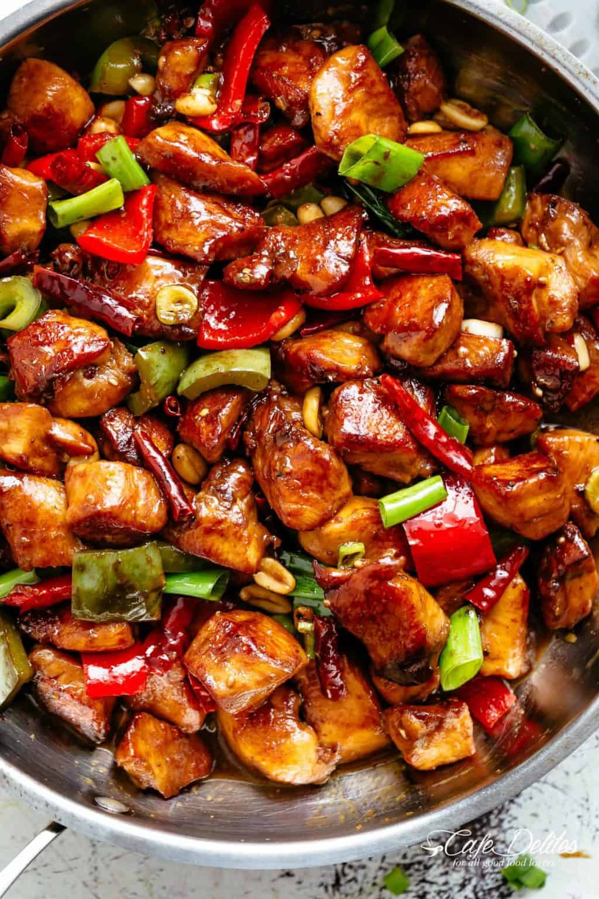

Kung Pao Chicken

Description
Kung Pao Chicken is a classic Chinese dish known for its bold flavors and
spicy kick. Tender pieces of chicken are stir-fried with peanuts, vegetables,
and chili peppers in a savory sauce. Kung Pao Chicken is a popular dish in
Sichuan cuisine and is often served with steamed rice.
Ingredients
- Chicken breast or thigh, diced
- Peanuts
- Vegetables (e.g., bell peppers, onions)
- Dried red chili peppers
- Garlic, minced
- Ginger, minced
- Soy sauce
- Rice vinegar
- Sesame oil
- Cornstarch
- Green onions, chopped (for garnish)
Steps
- Marinate the diced chicken in soy sauce, rice vinegar, and cornstarch.
- Heat oil in a wok or skillet and stir-fry the chicken until cooked through.
- Add minced garlic, ginger, and dried red chili peppers to the pan and stir-fry until fragrant.
- Add peanuts and vegetables to the pan and continue stir-frying until vegetables are tender-crisp.
- Season with soy sauce, rice vinegar, and sesame oil, adjusting to taste.
- Garnish with chopped green onions and serve hot with steamed rice.